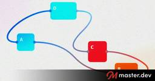

Master.dev Blog RSS Feed
https://blog.master.dev
Helping Your Journey to Senior Developer
フィード

Creating Diagrams and Graphs Using Modern CSS
Master.dev Blog RSS Feed
The final part of the connectors series: dynamic connections that pick the closest sides, static connections that always leave from the same edge, and some bendy, zig-zag, and spring connectors, all built with anchor positioning, border-shape, shape(), and if().
3日前
My Interop 2027 Picks
Master.dev Blog RSS Feed
What web platform features are we all wishing for perfect cross-browser interoperability next year?
4日前
TanStack AI’s Sandbox API
Master.dev Blog RSS Feed
Part 3 of this intro to TanStack AI covers the Sandbox API: spinning up a remote sandbox on Vercel or Railway, running Claude Code inside it with GitHub access, and having it clone your repo, add a feature, and open a pull request.
5日前

true or false in CSS
Master.dev Blog RSS Feed
CSS doesn’t have a boolean type, but it does have the true and false keywords. Register a custom property that only accepts them, flip it with :has(), and container style queries turn messy :checked selector combinations into readable conditions.
8日前
Data Access Testing With @testcontainers
Master.dev Blog RSS Feed
Testing data access code has always been awkward: unit tests want to be fast and isolated, and a real database is neither. With Docker and @testcontainers you can spin up a throwaway Postgres inside your Vitest suite, push your Drizzle schema into it, and verify that your real insert and query code round-trips correctly.
10日前
Multi-Column Different-Speed Scrolling
Master.dev Blog RSS Feed
Scroll-Driven Animations can step in and make scrolling feel different even if you aren't actually interfering with the actual page scroll.
11日前
Overriding Heading Levels With the headingoffset HTML Attribute
Master.dev Blog RSS Feed
The new headingoffset HTML attribute lets you bump a heading’s level up by adding to it, which is handy when a component’s h1 needs to be an h2 somewhere else. Here’s how the math works, how to reset it, how to style the result with :heading(), and where aria-level fits in.
12日前
Two Circles, One Connection, and border-shape
Master.dev Blog RSS Feed
Swapping the clip-path arrow from the previous article for border-shape and shape(), we can connect two draggable circles with fancy curved lines that stay perfectly aligned.
15日前
Useful @custom-media Presets
Master.dev Blog RSS Feed
Custom media queries let you name and reuse media queries the way custom properties do for values. Here’s a set of drop-in @custom-media presets for input mechanisms, breakpoints, and true HDR, plus a container style query version of each that works in every browser today.
17日前
How I Used Claude Code to Speed Up My Shell Startup by 95%
Master.dev Blog RSS Feed
I like the idea of "Please suggest 10 improvements to my ~/.zshrc" as a prompt (John Lindquist). Nick Taylor wrote up all the stuff it found for him and got nearly a second back for every fresh terminal opened.
17日前